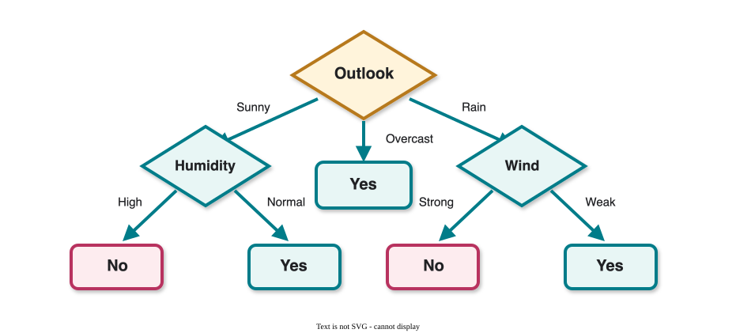
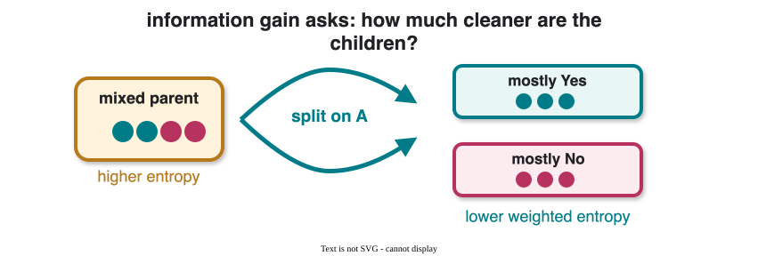

CS 463G & CS 663
(Intro to) AI
Lecture 25: Decision Trees
Fall 2026
Decision trees classify by asking a sequence of attribute questions.
Given attributes and a class label, a decision tree is a directed tree:
The path from root to leaf is an interpretable rule.
| Day | Outlook | Temp. | Humidity | Wind | Play? |
|---|---|---|---|---|---|
| D1 | Sunny | Hot | High | Weak | No |
| D2 | Sunny | Hot | High | Strong | No |
| D3 | Overcast | Hot | High | Weak | Yes |
| D4 | Rain | Mild | High | Weak | Yes |
| D5 | Rain | Cool | Normal | Weak | Yes |
| D6 | Rain | Cool | Normal | Strong | No |
| D7 | Overcast | Cool | Normal | Strong | Yes |
| D8 | Sunny | Mild | High | Weak | No |
| D9 | Sunny | Cool | Normal | Weak | Yes |
| D10 | Rain | Mild | Normal | Weak | Yes |
| D11 | Sunny | Mild | Normal | Strong | Yes |
| D12 | Overcast | Mild | High | Strong | Yes |
| D13 | Overcast | Hot | Normal | Weak | Yes |
| D14 | Rain | Mild | High | Strong | No |

Observation:
| Outlook | Temperature | Humidity | Wind | Play? |
|---|---|---|---|---|
| Sunny | Mild | Normal | Strong | ? |
Prediction: Yes.
We want a tree that is:
But the space of possible trees is enormous.
With n Boolean attributes, the number of possible decision trees is more than:
2^{2^n}
So we do not search exhaustively.
Decision-tree learning usually uses a greedy construction method: choose one split, recurse, and do not backtrack.
We want splits that create pure groups.
Most examples have the same label.
Prediction is easier.
Labels are mixed.
Prediction is uncertain.
Information gain measures how much a split reduces entropy.
Entropy of a set S:
H(S)=-\sum_{i=1}^{m} p_i\log_2 p_i
where p_i is the fraction of examples with class label i.
Examples:
For an attribute A:
IG(S,A)=H(S)-\sum_{v \in \text{Values}(A)}\frac{|S_v|}{|S|}H(S_v)
where S_v is the subset with A=v.

Choose the split that most reduces expected entropy.
In the tennis data:
H(\text{before}) = -\frac{9}{14}\log_2\frac{9}{14} -\frac{5}{14}\log_2\frac{5}{14} \approx 0.94
| Outlook value | Counts | Entropy |
|---|---|---|
| Sunny | 2 Yes, 3 No | 0.97 |
| Overcast | 4 Yes, 0 No | 0 |
| Rain | 3 Yes, 2 No | 0.97 |
H(\text{Outlook}) = \frac{5}{14}(0.97)+\frac{4}{14}(0)+\frac{5}{14}(0.97) \approx 0.69
IG(\text{Outlook})=0.94-0.69=0.25
Information gains:
| Attribute | Information gain |
|---|---|
| Outlook | 0.246 |
| Temperature | 0.029 |
| Humidity | 0.151 |
| Wind | 0.048 |
The best root is Outlook because it has the largest information gain.
Decision trees can overfit by creating branches that explain noise.
Pruning simplifies a tree after it is built.
Remove a split if its reduction in impurity is not statistically significant.
If a split has low immediate information gain, why not avoid it?
Because some useful patterns require combinations of attributes.
A first split might look weak, but it can enable a strong second split.
Post-pruning lets the tree discover interactions before simplifying.